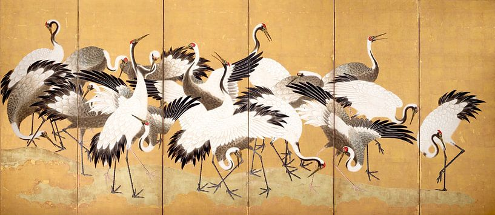

Je suis a Paris (I am in Paris)
Herman van Belkom
"An alienating view of a great city. A bit crazy but very deep and colorful work that is composed with great attention. Flowers, skies and of course Paris. The flying creatures are so beautifully detailed that it makes you happy."

Flock of Cranes, 1767-1784
Ishida Yutei
A multitude of cranes, in white, black, gray, and red, traverse a gold-leaf background. At the center, a pair of cranes watches over their chicks, symbolizing marital fidelity and family happiness—a popular motif in wedding and dowry items.